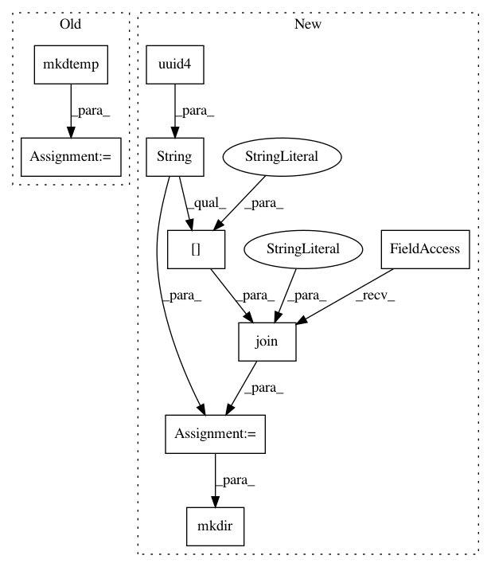

08ebd680e2a4dca6b00871e313a6a0fda8e6f618,mltsp/custom_feature_tools.py,,make_tmp_dir,#,411
Before Change
def make_tmp_dir():
path_to_tmp_dir = tempfile.mkdtemp()
return path_to_tmp_dir
def generate_random_str():
After Change
def make_tmp_dir():
path_to_tmp_dir = os.path.join("/tmp", str(uuid.uuid4())[:10])
os.mkdir(path_to_tmp_dir)
return path_to_tmp_dir
def generate_random_str():
In pattern: SUPERPATTERN
Frequency: 3
Non-data size: 9
Instances
Project Name: cesium-ml/cesium
Commit Name: 08ebd680e2a4dca6b00871e313a6a0fda8e6f618
Time: 2015-05-06
Author: a.crellinquick@gmail.com
File Name: mltsp/custom_feature_tools.py
Class Name:
Method Name: make_tmp_dir
Project Name: cesium-ml/cesium
Commit Name: 08ebd680e2a4dca6b00871e313a6a0fda8e6f618
Time: 2015-05-06
Author: a.crellinquick@gmail.com
File Name: mltsp/predict_class.py
Class Name:
Method Name: featurize_tsdata
Project Name: cesium-ml/cesium
Commit Name: 08ebd680e2a4dca6b00871e313a6a0fda8e6f618
Time: 2015-05-06
Author: a.crellinquick@gmail.com
File Name: mltsp/parallel_processing.py
Class Name:
Method Name: featurize_in_parallel